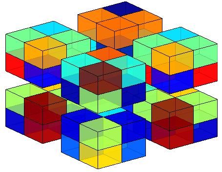
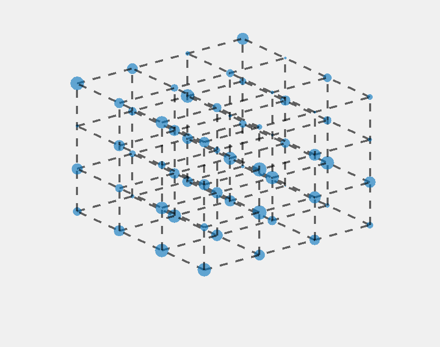

Software
Open-source implementations accompanying our methodological papers.
Packages
Code links also appear next to each paper on the Publications page.
| Package | Language | Description | Paper |
|---|---|---|---|
| tevis | MATLAB | Tensor visualization: illustrative figures for tensor-structured data and tensor methods. | See below |
| Tensor-on-tensor regression | R | Riemannian optimization for low-rank tensor-on-tensor regression. | Annals of Statistics, 2024 |
| HLloyd | R | High-order Lloyd algorithm for exact clustering in tensor block models. | JRSS-B, 2023 |
| TTOI | R | Tensor-train orthogonal iteration for high-order tensor SVD. | IEEE Trans. Inf. Theory, 2022 |
| ISLET | R | Fast low-rank tensor regression via importance sketching. | SIAM J. Math. Data Sci., 2020 |
| Cross | R | Efficient low-rank tensor completion. | Annals of Statistics, 2019 |
| STAT-SVD | R | Sparse and non-sparse tensor SVD for high-dimensional high-order data. | JASA, 2019; IEEE Trans. Inf. Theory, 2018 |
| StructureMC | R | Structured matrix completion for genomic data integration. | JASA, 2016 |
| CI_compositional_regression | MATLAB | Regression and inference for microbiome compositional data. | Annals of Applied Statistics, 2016 |
| sisVIVE | R (CRAN) | Instrumental variables estimation with some invalid instruments (Mendelian randomization). | JASA, 2016 |
tevis
Tensor visualization for MATLAB.
tevis — tensor visualization
A MATLAB package for visualization of tensors. It facilitates understanding of tensor-structured data and generates illustrative figures for tensor data methods.


